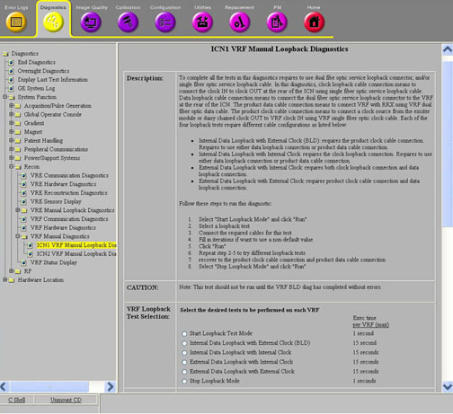
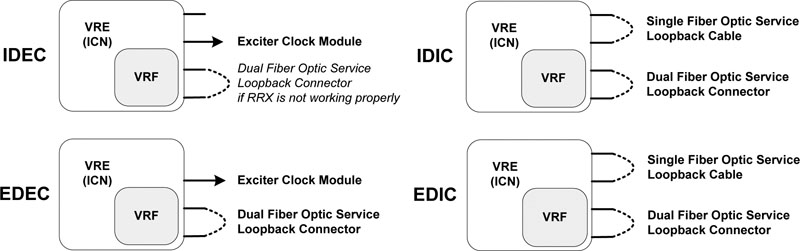

Operating Documentation
Direction 5500113, Rev# 3
Discovery MR450 1.5T Service Methods
Module Version 6.0, Version Date 8/16/10
Operating Documentation |
Diagnostics → System Function → Recon → VRF Manual Diagnostics → ICN VRF Manual Loopback Diagnostics
Diagnostics → Hardware Location → PGR Cabinet → Recon → VRF Manual Diagnostics → ICN VRF Manual Loopback Diagnostics
Illustration 1: ICN VRF Manual Loopback Diagnostics

The ICN VRF Manual Loopback Diagnostics differentiate VRF failure modes due to the VRF link module, fiber data cable to VRF data input point, VRF clock module, or clock cable to VRF clock input port.
VRF Board
VRF Dual Fiber-Optic Data Cable
VRF Single Fiber-Optic Clock Cable
Exciter Clock Module
This diagnostic requires that either the dual fiber-optic service loopback connector, the single fiber-optic service loopback cable, or both are connected to the VRF. The existing spare single fiber-optic service loopback cable can be used to connect the CLK IN to the CLK OUT at the rear of the ICN for the clock loopback cable connection. Data loopback requires special dual fiber-optic service loopback connector to replace the product cable, and to connect to the same data fiber connector at the rear of the ICN.
Required Parts for Loopback Tests:
Service Cable Kit (5306523) includes:
Dual Fiber-Optic Service Loopback Connector (5306530)
Single Fiber-Optic Service Loopback Cable (5309512)
Each of the four loopback tests require different cable configurations as listed below. (See Illustration 2.)
Internal Data Loopback with External Clock (IDEC) requires use of the dual fiber-optic service loopback connector if RRX is not working properly. Otherwise, product configuration is supported.
Internal Data Loopback with Internal Clock (IDIC) requires both the single fiber-optic service loopback cable and the dual fiber-optic service loopback connector.
External Data Loopback with External Clock (EDEC) requires the dual fiber-optic service loopback connector only.
External Data Loopback with Internal Clock (EDIC) requires both the single fiber-optic service loopback cable and the dual fiber-optic service loopback connector.
| NOTE: | Refer to Section 6.1 for the proper sequence to connect and disconnect the cables at the rear of the ICN. |
Illustration 2: ICN VRF Manual Loopback Data Paths

Rotate the connector counterclockwise until a click is heard/felt.
Pull the metallic part back until the key disengages, and slowly pull the cable out.
Insert the protruding white portion of the clock loopback cable into the CLK IN connector socket on the ICN.
Turn the entire cable (not just the metallic connector) until the key wedges into the gap on the socket and push the cable inside.
Push the metallic part in and rotate it clockwise until a click is heard/felt. Gently tug the cable to make sure it is securely fastened.
Connect the other end of the clock loopback cable to CLK OUT on the ICN following the same process described above.
Press the tab on the bottom side of the cable connector.
Pull the connector out of socket on the ICN.
Align the cable connector with the socket on the ICN.
Press the tab on the underside of the cable connector, and push the connector into the socket.
| NOTE: |
(For 32-channel 4100 systems)
Use the ICN Identification tool from the Common Service
Desktop (Utilities
→
Toolbox
→
VRE
→
ICN Identification), to help identify ICN1 and ICN2 before performing a
loopback test. This will distinguish the cable connection and disconnection
with a VRF other than the one being tested from the VRF manual loopback
diagnostics. (For 32-channel 4170 systems) Use the HART log to identify VRF1 and VRf2. (From the Common Service Desktop: Error Logs → HART Log → Current Status.) Look for the item "VRF" in the BoardType column. Check the Board Location for this board. The slot number indicates the physical location of the VRF. Slot 19 is located to the side of the ICN. Slot 13 is located at the center of the ICN.) This will distinguish the cable connection and disconnection with a VRF other than the one being tested from the VRF manual loopback diagnostics. |
Select [Start Loopback Mode].
Click [Run].
Connect the required cables for the selected test as shown in Illustration 2.
| NOTE: | If using a non-default value to test (under Options) complete the Iterations field. |
Select a loopback test that is allowed for the applied cable connections.
Click [Run].
To try a different loopback test, repeat Steps 3 through 5.
Recover the cable connections to product configuration.
Select [Stop Loopback Mode].
Click [Run].
These diagnostics display and output in the Test Results area. If the test passes the stress, PASS displays in blue along with the VRF serial number and ICN number. The string FAIL displays in red with the VRF serial number, ICN number, and details of the failure.
Table 1: Diagnostic Results
| Results | Description | GE Field Action |
|---|---|---|
| IDEC and EDEC passed. | The VRF board is OK. | No further action required. |
| IDEC passed, but EDEC failed. | The VRF link module may have problems. |
|
| IDEC failed, but IDIC passed. | The clock input to VRF may have problems. | Check the clock cable and Excite clock module. |
| IDEC and IDIC failed. | VRF clock module may have problems. |
|